<!doctype html>
<html>
<head>
<meta charset="utf-8">
<title>Emerald Diving:  Gulf Islands 12.27.10</title>
<meta name="generator" content="WYSIWYG Web Builder - http://www.wysiwygwebbuilder.com">
<link href="Emerald_Diving.css" rel="stylesheet">
<link href="Gulf_Islands_12.28.10.css" rel="stylesheet">
<script>
function onChangeGoMenu1(){var a=document.getElementById('GoMenu1-select'),b=a.options[a.selectedIndex].value,c=a.options[a.selectedIndex].className;a.selectedIndex=0;a.blur();b&&(NewWin=window.open(b,c),window.NewWin.focus())};
</script>
<link rel="canonical" href="https://pnwdiving.com/emerald-diving/Gulf_Islands_12.28.10.html">
</head>
<body>
<script>
var gaJsHost = (("https:" == document.location.protocol) ? "https://ssl." : "http://www.");
document.write(unescape("%3Cscript src='" + gaJsHost + "google-analytics.com/ga.js' type='text/javascript'%3E%3C/script%3E"));
</script>
<script>
try {
var pageTracker = _gat._getTracker("UA-15987748-1");
pageTracker._trackPageview();
} catch(err) {}</script>

<div id="container">
<div id="wb_Shape1" style="position:absolute;left:0px;top:0px;width:1050px;height:6268px;z-index:19;">
</div>
<div id="wb_Shape2" style="position:absolute;left:185px;top:92px;width:850px;height:6150px;z-index:20;">
</div>
<div id="wb_Text2" style="position:absolute;left:294px;top:2610px;width:155px;height:46px;text-align:justify;z-index:21;">
<span style="color:#C0C0C0;font-family:Arial;font-size:13px;"><br><br></span></div>
<div id="wb_MasterPage2" style="position:absolute;left:1px;top:0px;width:1006px;height:2656px;z-index:22;">
<div id="wb_Text5" style="position:absolute;left:293px;top:2610px;width:155px;height:46px;text-align:justify;z-index:13;">
<span style="color:#C0C0C0;font-family:Arial;font-size:13px;"><br><br></span></div>
<div id="wb_Text3" style="position:absolute;left:229px;top:4px;width:657px;height:60px;z-index:14;">
<span style="color:#005500;font-family:Impact;font-size:48px;">Dive Reports</span></div>
<div id="wb_GoMenu1" style="position:absolute;left:729px;top:26px;width:277px;height:25px;z-index:15;">
<form id="GoMenu1" role="menu">
<select id="GoMenu1-select" name="GoMenu1" onchange="onChangeGoMenu1()">
<option class="_self" value="#" selected>Select a dive trip report</option>
<option class="_self" value="./Red_Sea_2017.html" role="menuitem">Red Sea 2017</option>
<option class="_self" value="./Tiger_Beach_2016.html" role="menuitem">Tiger Beach, BAHAMAS (Jan 2016)</option>
<option class="_self" value="./Discovery_Passage_2015.html" role="menuitem">Discovery Passage, BC (Sept 2015)</option>
<option class="_self" value="./Tiger_Beach_2015.html" role="menuitem">Tiger Beach, BAHAMAS (May 2015)</option>
<option class="_self" value="./Mala_Warf_2015.html" role="menuitem">Mala Warf, HAWAII (Feb 2015)</option>
<option class="_self" value="./Neah_Bay_2013.html" role="menuitem">Neah Bay, WA (Aug 2013)</option>
<option class="_self" value="./Belize_2012.html" role="menuitem">Belize (June 2012)</option>
<option class="_self" value="./Hood_Canal_2.11.12.html" role="menuitem">Hood Canal, WA (Feb 2012)</option>
<option class="_self" value="./Neah_Bay_7.22.11.html" role="menuitem">Neah Bay, WA (Jul 2011)</option>
<option class="_self" value="./Gulf_Islands_12.28.10.html" role="menuitem">Gulf Islands, BC (Dec 2010)</option>
<option class="_self" value="./Three_Tree_11.27.10.html" role="menuitem">Tree Tree Pt., WA (Nov 2010)</option>
<option class="_self" value="./Neah_Bay_07.17.10.html" role="menuitem">Neah Bay, WA (Jul 2010)</option>
<option class="_self" value="./Port_Hardy_4.6.10.html" role="menuitem">Port Hardy, BC (Apr 2010)</option>
<option class="_self" value="./Lopez_11.27.09.html" role="menuitem">Lopez Island, WA (Nov 2009)</option>
<option class="_self" value="./Neah_Bay_07.17.09.html" role="menuitem">Neah Bay, WA (Jul 2009)</option>
<option class="_self" value="./San_Juans_06.27.09.html" role="menuitem">San Juan Is., WA (Jun 2009)</option>
<option class="_self" value="./Nautilus_06.01.09.html" role="menuitem">Vancouver Is., BC (Jun 2009)</option>
<option class="_self" value="./Tumbo_Island_4.18.09.html" role="menuitem">Tumbo Channel, BC (Apr 2009)</option>
<option class="_self" value="./KVI_Tower_09.27.08.html" role="menuitem">KVI Tower, WA (Sept 2008)</option>
<option class="_self" value="./Neah_Bay_08.11.08.html" role="menuitem">Neah Bay, WA (Aug 2008)</option>
<option class="_self" value="./Hood_Canal_08.02.08.html" role="menuitem">Hood Canal. WA (Aug 2008)</option>
</select>
</form>
</div>
<div id="wb_Text2" style="position:absolute;left:2px;top:5px;width:158px;height:77px;text-align:center;z-index:16;">
<span style="color:#000000;font-family:Impact;font-size:24px;"><em>Emerald Diving</em></span><span style="color:#000000;font-family:Arial;font-size:21px;"><strong><em><br></em></strong></span><span style="color:#000000;font-family:Arial;font-size:13px;"><strong><em>Explore the coastal and inland waters of <br>Washington and BC</em></strong></span></div>
<div id="wb_Text1" style="position:absolute;left:10px;top:9px;width:158px;height:77px;text-align:center;z-index:17;">
<span style="color:#000000;font-family:Impact;font-size:24px;"><em>Emerald Diving</em></span><span style="color:#000000;font-family:Arial;font-size:21px;"><strong><em><br></em></strong></span><span style="color:#000000;font-family:Arial;font-size:13px;"><strong><em>Explore the coastal and inland waters of <br>Washington and BC</em></strong></span></div>
<div id="wb_MasterPage1" style="position:absolute;left:8px;top:4px;width:160px;height:733px;z-index:18;">
<div id="wb_EDExplore" style="position:absolute;left:2px;top:5px;width:158px;height:77px;text-align:center;z-index:0;">
<span style="color:#000000;font-family:Impact;font-size:24px;"><em>Emerald Diving</em></span><span style="color:#000000;font-family:Arial;font-size:21px;"><strong><em><br></em></strong></span><span style="color:#000000;font-family:Arial;font-size:13px;"><strong><em>Explore the coastal and inland waters of <br>Washington and BC</em></strong></span></div>
<div id="wb_GreenBar" style="position:absolute;left:0px;top:0px;width:159px;height:733px;z-index:1;">
</div>
<div id="wb_PhotoJournal" style="position:absolute;left:6px;top:124px;width:145px;height:53px;z-index:2;">
<a href="./composite_gallery.html"></a></div>
<div id="wb_SpeciesGallery" style="position:absolute;left:6px;top:186px;width:145px;height:53px;z-index:3;">
<a href="./gallery_intro.html"></a></div>
<div id="wb_SpeciesID" style="position:absolute;left:6px;top:247px;width:145px;height:53px;z-index:4;">
<a href="./id_intro.html"></a></div>
<div id="wb_LocalSites" style="position:absolute;left:6px;top:307px;width:145px;height:53px;z-index:5;">
<a href="./local_sites.html"></a></div>
<div id="wb_TripReports" style="position:absolute;left:6px;top:430px;width:145px;height:53px;z-index:6;">
<a href="./recent_dives.html"></a></div>
<div id="wb_DiveVideos" style="position:absolute;left:6px;top:491px;width:145px;height:53px;z-index:7;">
<a href="./dive_videos.html"></a></div>
<div id="wb_Commentaries" style="position:absolute;left:6px;top:552px;width:145px;height:53px;z-index:8;">
<a href="./commentaries.html"></a></div>
<div id="wb_WolfEDBanner" style="position:absolute;left:0px;top:0px;width:157px;height:100px;z-index:9;">
<a href="./index.html"></a></div>
<div id="wb_AboutED" style="position:absolute;left:6px;top:612px;width:145px;height:53px;z-index:10;">
<a href="./about.html"></a></div>
<div id="wb_ContactED" style="position:absolute;left:6px;top:673px;width:145px;height:53px;z-index:11;">
<a href="mailto:keith@emeralddiving.com"></a></div>
<div id="wb_Image1" style="position:absolute;left:5px;top:368px;width:145px;height:53px;z-index:12;">
<a href="./tropic_diving_galleries.html"></a></div>
</div>
</div>
<div id="wb_Text3" style="position:absolute;left:207px;top:597px;width:563px;height:65px;text-align:center;z-index:23;">
<span style="color:#009300;font-family:Arial;font-size:16px;"><strong>Cedar Beach/49 Parallel Diving Charters</strong></span><span style="color:#E6E6FA;font-family:Arial;font-size:13px;"><br><br></span><span style="color:#FFFFFF;font-family:Arial;font-size:13px;"><br></span></div>
<div id="wb_Text4" style="position:absolute;left:186px;top:113px;width:841px;height:24px;text-align:center;z-index:24;">
<span style="color:#C0C0C0;font-family:Arial;font-size:21px;"><strong>Canadian Gulf Islands:&nbsp; 12.27.10-12.30.10</strong></span></div>
<div id="wb_Image2" style="position:absolute;left:265px;top:155px;width:694px;height:519px;z-index:25;">
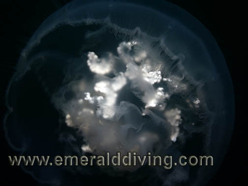</div>
<div id="wb_Text5" style="position:absolute;left:260px;top:702px;width:697px;height:28px;text-align:center;z-index:26;">
<span style="color:#FFFFFF;font-family:Arial;font-size:11px;"><em>Excellent visiblity in Stuart Channel made for some excellent photo opportunities of the jellyfish driting in the channel.&nbsp; The underside of a moon jelly photographed at Alarm Rock.</em></span></div>
<div id="wb_Image3" style="position:absolute;left:200px;top:2433px;width:244px;height:182px;z-index:27;">
</div>
<div id="wb_Image5" style="position:absolute;left:675px;top:5944px;width:343px;height:256px;z-index:28;">
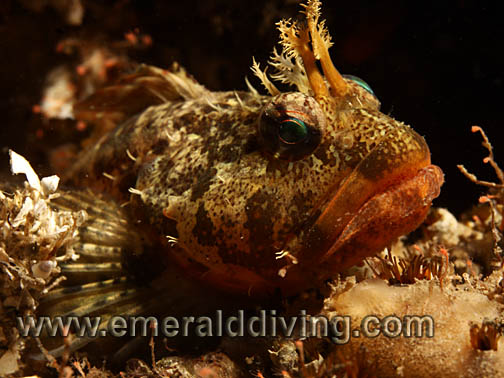</div>
<div id="wb_Text8" style="position:absolute;left:204px;top:751px;width:814px;height:176px;text-align:justify;z-index:29;">
<span style="color:#F2F2F2;font-family:Arial;font-size:13px;">One of the many benefits of creating the Emerald Diving website is meeting new people genuinely interested in the marine life in our area and dedicated to preserving it.&nbsp; Amongst all the great people Emerald Diving introduced to me, I feel the most fortunate in meeting Andy Lamb.&nbsp; You may have heard of Andy as he has authored the two most comprehensive Pacific Northwest marine identification books - Coastal Fishes of the Pacific Northwest and Marine Life of the Pacific Northwest.&nbsp;&nbsp; Andy was kind enough to go through the marine identification portion of Emerald Diving early on and note any discrepancies or errors.&nbsp; To this day, I turn to Andy first and foremost anytime I have a picture of a mystery critter.&nbsp; If Andy doesn’t know what it is, he can usually put me in touch with someone who does.<br><br>What most people do not know about Andy is he also operates a lodge in the Canadian Gulf Islands with his wife, Virginia.&nbsp; The lodge is aptly named Cedar Beach as it is nestled on the shore amongst tall cedar trees on Thetis Island.&nbsp; Andy and his wife Virginia can accommodate up to 8 people at a time in three guestrooms.&nbsp; The lodge is very comfortable, clean, well-kept and is guaranteed to keep you well fed with hearty and delicious meals.</span></div>
<div id="wb_Image6" style="position:absolute;left:461px;top:2988px;width:547px;height:409px;z-index:30;">
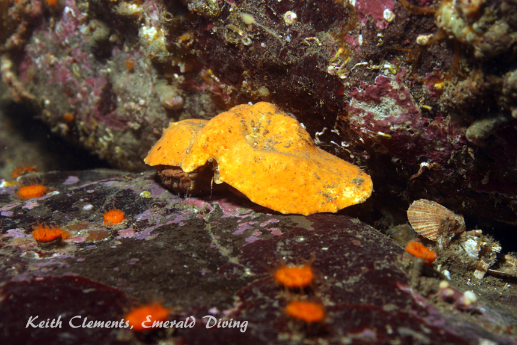</div>
<div id="wb_Image7" style="position:absolute;left:197px;top:5855px;width:462px;height:345px;z-index:31;">
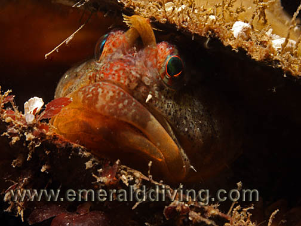</div>
<div id="wb_Image9" style="position:absolute;left:460px;top:3425px;width:547px;height:409px;z-index:32;">
</div>
<div id="wb_Image10" style="position:absolute;left:197px;top:4857px;width:456px;height:340px;z-index:33;">
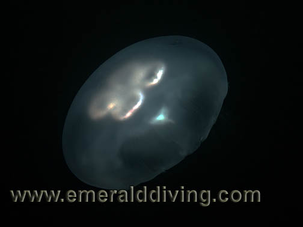</div>
<div id="wb_Text13" style="position:absolute;left:463px;top:2689px;width:341px;height:14px;text-align:center;z-index:34;">
<span style="color:#FFFFFF;font-family:Arial;font-size:11px;"><em>The cockpit windshield of the Boeing 737.</em></span></div>
<div id="wb_Text16" style="position:absolute;left:322px;top:1929px;width:348px;height:14px;text-align:center;z-index:35;">
<span style="color:#FFFFFF;font-family:Arial;font-size:11px;"><em>Feather stars on the jack-stand supports of the Boeing 737. </em></span></div>
<div id="wb_Image11" style="position:absolute;left:674px;top:4816px;width:343px;height:256px;z-index:36;">
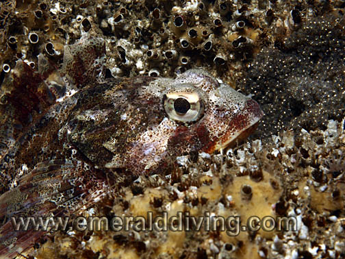</div>
<div id="wb_Image12" style="position:absolute;left:197px;top:5231px;width:456px;height:340px;z-index:37;">
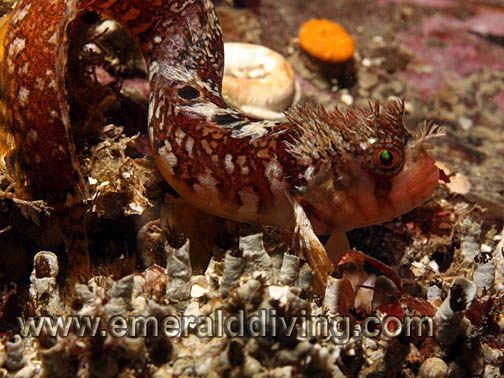</div>
<div id="wb_Text14" style="position:absolute;left:432px;top:2944px;width:347px;height:14px;text-align:center;z-index:38;">
<span style="color:#FFFFFF;font-family:Arial;font-size:11px;"><em>Nanaimo dorid, Porlier Pass</em></span></div>
<div id="wb_Text18" style="position:absolute;left:430px;top:3237px;width:345px;height:14px;text-align:center;z-index:39;">
<span style="color:#FFFFFF;font-family:Arial;font-size:11px;"><em>Large butteryfly crab (4&quot;), Porlier Pass</em></span></div>
<div id="wb_Image1" style="position:absolute;left:676px;top:5659px;width:343px;height:256px;z-index:40;">
</div>
<div id="wb_Image4" style="position:absolute;left:677px;top:5375px;width:343px;height:256px;z-index:41;">
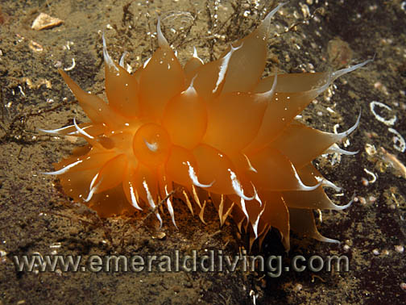</div>
<div id="wb_Image13" style="position:absolute;left:674px;top:5091px;width:343px;height:256px;z-index:42;">
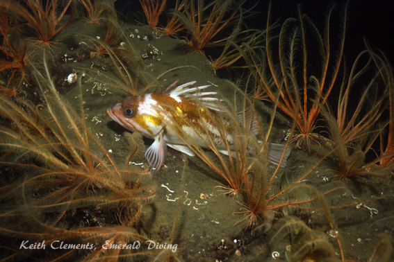</div>
<div id="wb_Image15" style="position:absolute;left:457px;top:3938px;width:547px;height:409px;z-index:43;">
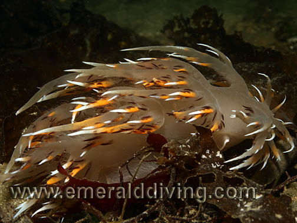</div>
<div id="wb_Image16" style="position:absolute;left:457px;top:4580px;width:343px;height:256px;z-index:44;">
</div>
<div id="wb_Image17" style="position:absolute;left:457px;top:4366px;width:263px;height:195px;z-index:45;">
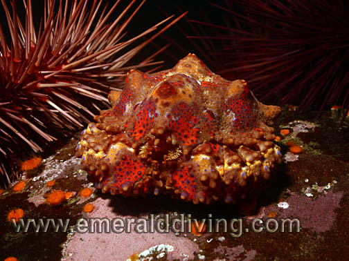</div>
<div id="wb_Image18" style="position:absolute;left:459px;top:2711px;width:343px;height:256px;z-index:46;">
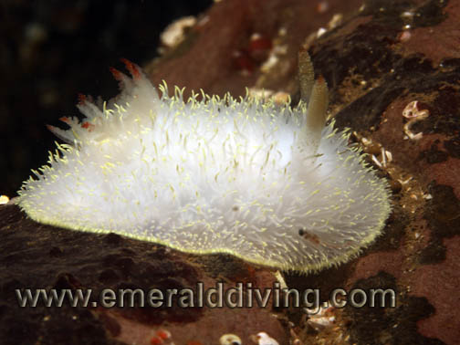</div>
<div id="wb_Image19" style="position:absolute;left:459px;top:2428px;width:343px;height:256px;z-index:47;">
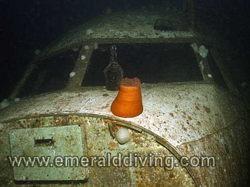</div>
<div id="wb_Image20" style="position:absolute;left:740px;top:4366px;width:263px;height:195px;z-index:48;">
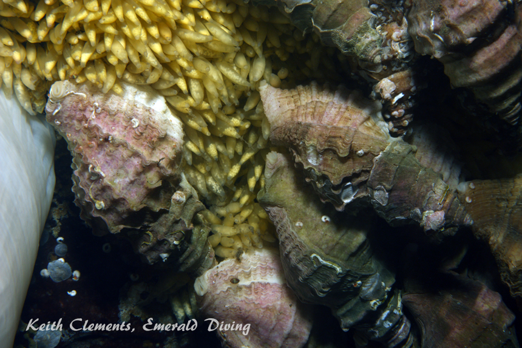</div>
<div id="wb_Image21" style="position:absolute;left:200px;top:1473px;width:602px;height:450px;z-index:49;">
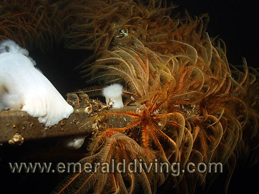</div>
<div id="wb_Image22" style="position:absolute;left:196px;top:1950px;width:602px;height:450px;z-index:50;">
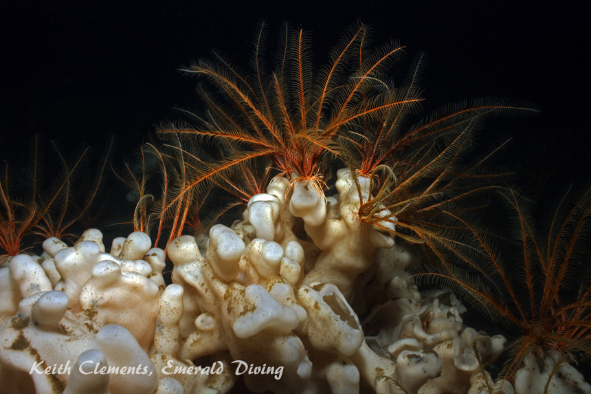</div>
<div id="wb_Image23" style="position:absolute;left:342px;top:947px;width:556px;height:500px;z-index:51;">
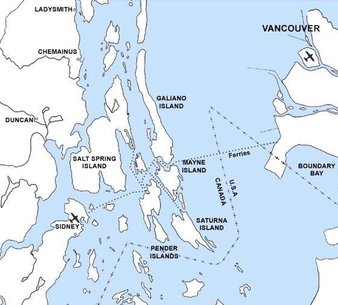</div>
<div id="wb_Text15" style="position:absolute;left:508px;top:976px;width:82px;height:38px;z-index:52;">
<span style="color:#FF0000;font-family:Arial;font-size:16px;"><strong>Thetis Island</strong></span></div>
<div id="wb_Text17" style="position:absolute;left:580px;top:1016px;width:82px;height:14px;z-index:53;">
<span style="color:#FF0000;font-family:Arial;font-size:11px;"><strong>Porlier Pass</strong></span></div>
<div id="wb_Text19" style="position:absolute;left:444px;top:1067px;width:116px;height:16px;z-index:54;">
<span style="color:#FF0000;font-family:Arial;font-size:13px;"><strong>Stuart Channel</strong></span></div>
<div id="wb_Text9" style="position:absolute;left:198px;top:2407px;width:603px;height:14px;text-align:center;z-index:55;">
<span style="color:#FFFFFF;font-family:Arial;font-size:11px;"><em>Feather stars and clound sponge near the Boeing 737</em></span></div>
<div id="wb_Text10" style="position:absolute;left:138px;top:2622px;width:348px;height:14px;text-align:center;z-index:56;">
<span style="color:#FFFFFF;font-family:Arial;font-size:11px;"><em>Grey Brittle Stars, Stuart Channel</em></span></div>
<div id="wb_Text11" style="position:absolute;left:821px;top:1467px;width:196px;height:1488px;text-align:justify;z-index:57;">
<span style="color:#F2F2F2;font-family:Arial;font-size:13px;">As I have known Andy for about two years now, I figured it was about time I do some diving with him in his part of the pond.&nbsp; I took Andy up on his offer to join his winter diving charter this year between Christmas and New Years.&nbsp; Although the days are short and the weather cold and a bit unpredictable, the underwater visibility is usually very good in the northern Gulf Islands this time of year.<br><br>On a rainy, cold, and windy December 27<sup>th</sup>, I set off from Seattle for Thetis Island.&nbsp; A border crossing, two ferry rides, and 175 miles of driving later, I arrived safely at Cedar Beach.&nbsp; The next morning, I awoke to sunshine, freezing temps, blue skies, calm winds and glassy water.&nbsp; After a wonderful breakfast, we drove the two miles to Telegraph Harbour to meet the dive 41 foot aluminum dive vessel, the Red Urchin, owned and operated by Captain Peter and 49 Parallel Dive Charters.&nbsp; We got our gear safely to the boat across icy docks (which involved some slipping and sliding) then headed across Stuart Channel to pick up a couple local divers for a total of 6 divers on this day.&nbsp; We then headed a short distance to our first dive site - the submerged Boeing 737.&nbsp; This intentionally sunk commercial plane has been totally stripped and sits upright on jack-stands in about 90 feet of water.&nbsp; Large access holes are cut at either end of the plane’s fuselage to allow easy access to the passenger cabin and cockpit area. <br><br>I descended to the wreck on the tail section and was greeted by a school of striped sea-perch peacefully schooling over the top of the wreck.&nbsp; The only TSA agents on duty resembled copper rockfish that actually retreated&nbsp; into the plane as I approached the aircrafts cabin.&nbsp; Although there is very little marine life encrusting the top of the plane, the underside of the plane and supporting jack stands are densely covered with thousands of gorgeous feather stars.&nbsp; An added bonus was a small cloud sponge situated on the substrate just below the right horizontal stabilizer in 95 feet of water.&nbsp; Although I wouldnt want to dive this wreck often, it was certainly a novelty to do once.<br><br>We ended the first day with two more dives in Stuart Channel - Bare Reef and Escape Reef.&nbsp; Both of these natural rock reefs were nice dives, although not spectacular.&nbsp; Rockfish populations were limited to copper, brown, quillback, and the odd shy tiger.&nbsp; Lingcod and kelp greenlings were pervasive.&nbsp; Lone white lined dironas and Nanaimo dorid graced the rocks, as did sunflower, morning, pink short-spined, vermillion, and the odd cushion star.&nbsp; Most noticeable was the continued presence of dense colonies of feather stars clinging to the rocky structure.&nbsp; Vis on both of these dives eclipsed 40 feet at times.&nbsp; Simply gorgeous.</span></div>
<div id="wb_Text21" style="position:absolute;left:207px;top:2674px;width:232px;height:2094px;text-align:justify;z-index:58;">
<span style="color:#F2F2F2;font-family:Arial;font-size:13px;">After an amazing dinner of fresh sockeye salmon, Dungeness crab, and spot prawns and a good night’s sleep, we were back at the boat at 8:30 the next morning.&nbsp; Although our sunny skies remained, the night brought some nasty sustained winds of about 25 knots.&nbsp; Porlier Pass was on the agenda today, which requires crossing an open channel and diving some relatively exposed sites.&nbsp; We decided to give it a try even with the strong winds.&nbsp; We headed east out of Telegraph Harbour across Trincomali Channel and battled the 4-5 foot seas.&nbsp; Once we made Porlier Pass, the waves subsided to the point that Captain Peter felt comfortable with us diving the primary objective for the day, Dionisio Point.&nbsp; Peter anchored the boat and the four of us jumped in and clawed our way up the tag line running alongside the boat to the anchor line.&nbsp; Once we descended, conditions improved markedly.&nbsp; We worked our way over to the wall and found ourselves with good underwater vis (about 30 feet).&nbsp; The wall harbors quite a few benthic rockfish (quillback, copper, brown, and tiger), some nice sized lingcod, kelp greenling, painted greenling, and even the odd cabezon.&nbsp; Feather stars again added character to the wall, and I even found a colorful young Puget Sound King Crab to pose for a couple of pictures.&nbsp; We ended this wonderful dive by surfacing to find the wave action had substantially picked up.&nbsp; Getting out of the water onto a pitching ladder attached to the dive vessel was a bit on an adventure, but we all survived.&nbsp; <br><br>We then headed back across the channel for cover.&nbsp; Our next dive was at the south end of a small island in the pass called Norway Island.&nbsp; Captain Peter chose this site for one reason - it was out of the wind.&nbsp; This site was a bit of a stinker as in was relatively shallow and the waves were stirring up the bottom.&nbsp; Vis was 10 feet at best, and worse at times.&nbsp; However, I was able to entertain myself for an hour finding Dendronotus iris and moon snails.&nbsp; I hoped to video Dendronotus iris attaching a tube anemone.&nbsp; I got close on one occasion, but the nudibranch seemed to keep toying with the anemones and never made the “death leap”.&nbsp; Eventually the tube anemone caught on and retracted to safety.<br><br>The last dive of the day was back in Stuart Channel at Alarm Rock.&nbsp; This was another very nice dive - and vis was again 40+ feet at depth.&nbsp; The site consists of a series of tall walls which stair-step down to over 100 feet.&nbsp; This site was home to the same cast of characters as the other sites, the exception being&nbsp; three species of perch, including about 20 kelp perch schooling together.&nbsp; I usually only note kelp perch alone, or in small schools of 4 or less.&nbsp;&nbsp; I thoroughly enjoyed this dive as it was a fun explore and very relaxing.&nbsp; After the day’s diving, it was back to Cedar Beach for a delicious steak dinner with all the fixings - and a homemade chocolate cheesecake for dessert.&nbsp; Talk about being spoiled.<br><br>The final day brought us sunshine and calm winds once again.&nbsp; As I had to catch the 1:20 ferry from Thetis to start my journey home, we kept today’s diving close to Telegraph Harbour.&nbsp; <br><br>Our first dive was at the opposite end of Norway Island, which we dove the day prior.&nbsp; The north end offered better visibility (20 feet) and a bit more interesting terrain.&nbsp; This was a subtle site, but Andy and I made the most of it by taking our time and really looking for little things.&nbsp; We were rewarded with a couple of beautiful mosshead warbonnets and some posing scalyhead sculpins.&nbsp; Andy showed me a couple species of&nbsp; “hitchhiker” marine worms on sea cucumber, painted stars, and leather stars that I had never noticed before.&nbsp; Diving with Andy is always an education.<br><br>My last dive was on an offshore pinnacle in about 50 feet of water named Stuart Pinnacle - located, of course, in Stuart Channel.&nbsp; This site highlights an expansive wall cascading down from 50 to about 90 feet before ledging out for about 30-40 feet, where it turns vertical again.&nbsp; Fallen boulders create a rubble pile along the base of the first wall, which is packed with marine life.&nbsp; There is even a loan cloud sponge located along the first ledge in about 95 feet of water.&nbsp;&nbsp; More cloud sponged reportedly live on the deeper wall, but my Nitrox mix did not allow for exploration beyond 99 feet.&nbsp; The marine life on this pinnacle was similar to the other dives. Nice aggregations of while plumose anemones and feather stars broke up the rocky terrain.&nbsp; Benthic rockfish were easily spotted huddling in the holes created in the rubble pile at the base of the wall.&nbsp; <br><br><br></span></div>
<div id="wb_Text22" style="position:absolute;left:504px;top:3868px;width:160px;height:42px;text-align:right;z-index:59;">
<span style="color:#FFFFFF;font-family:Arial;font-size:11px;"><em>Giant nudibranchs (Dendronotus iris).&nbsp; Note the different color variations.</em></span></div>
<div id="wb_Text23" style="position:absolute;left:206px;top:4330px;width:212px;height:78px;text-align:justify;z-index:60;">
<span style="color:#F2F2F2;font-family:Arial;font-size:13px;"><br></span><span style="color:#000000;font-family:Arial;font-size:13px;"><br><br><br></span></div>
<div id="wb_Text26" style="position:absolute;left:812px;top:4637px;width:194px;height:126px;z-index:61;">
<span style="color:#FFFFFF;font-family:Arial;font-size:11px;"><em>Top left:&nbsp; Juvenile Puget Sound king crab<br><br>Top&nbsp; right:&nbsp; Dogwiinkle laying eggs<br><br>Left:&nbsp; Lingcod<br><br>Bottom right:&nbsp; Red Iridsh lord attending eggs</em></span></div>
<div id="wb_Text28" style="position:absolute;left:53px;top:5207px;width:345px;height:14px;text-align:center;z-index:62;">
<span style="color:#FFFFFF;font-family:Arial;font-size:11px;"><em>Moon jelly</em></span></div>
<div id="wb_Text29" style="position:absolute;left:646px;top:5354px;width:345px;height:14px;text-align:center;z-index:63;">
<span style="color:#FFFFFF;font-family:Arial;font-size:11px;"><em>Copper rockfish amongst feather stars at Stuart Pinnacle.</em></span></div>
<div id="wb_Text30" style="position:absolute;left:202px;top:5580px;width:277px;height:14px;z-index:64;">
<span style="color:#FFFFFF;font-family:Arial;font-size:11px;"><em>Mosshead warbonnet at Norway Island.</em></span></div>
<div id="wb_Text31" style="position:absolute;left:586px;top:5638px;width:345px;height:14px;text-align:center;z-index:65;">
<span style="color:#FFFFFF;font-family:Arial;font-size:11px;"><em>Golden dirona at Stuart Channel.</em></span></div>
<div id="wb_Text32" style="position:absolute;left:594px;top:5921px;width:345px;height:14px;text-align:center;z-index:66;">
<span style="color:#FFFFFF;font-family:Arial;font-size:11px;"><em>Painted greenling at&nbsp; Norway Island. </em></span></div>
<div id="wb_Text33" style="position:absolute;left:199px;top:5612px;width:449px;height:222px;text-align:justify;z-index:67;">
<span style="color:#F2F2F2;font-family:Arial;font-size:13px;">Although I wouldn’t put the diving in this area at the same level as Neah Bay, Port Hardy, or even the better sites in the San Juans, it is nonetheless very nice and certainly worth the trip up here to see.&nbsp; Andy and Peter know these sites extremely well and run a great charter, putting us on the best dives each day given the conditions.&nbsp; The dive vessel was very well run and organized.&nbsp; Even in freezing weather, the heated cabin and hot drinks offered excellent refuge from the cold.&nbsp; The family-style meals and service I received while staying at Cedar Beach were simply top notch as well.&nbsp; And of course, what you can’t find anywhere else in the northwest is the chance to dive with Andy and his uncanny ability to find creatures that everyone else just doesn’t see.&nbsp; <br><br>For more information regarding Cedar Beach, visit <u><a href="http://www.cedar-beach.com">www.cedar-beach.com</a></u>.<br></span></div>
<div id="wb_Text34" style="position:absolute;left:201px;top:6207px;width:235px;height:14px;z-index:68;">
<span style="color:#FFFFFF;font-family:Arial;font-size:11px;"><em>Scalyhead sculpin</em></span></div>
<div id="wb_Image14" style="position:absolute;left:675px;top:3749px;width:343px;height:256px;z-index:69;">
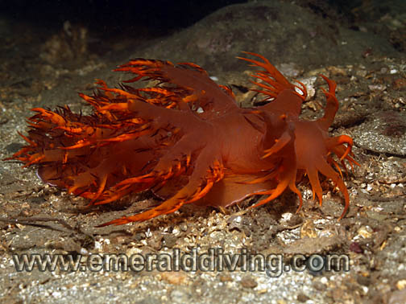</div>
<div id="wb_Text1" style="position:absolute;left:677px;top:6208px;width:235px;height:14px;z-index:70;">
<span style="color:#FFFFFF;font-family:Arial;font-size:11px;"><em>Scalyhead sculpin</em></span></div>
</div>
</body>
</html>